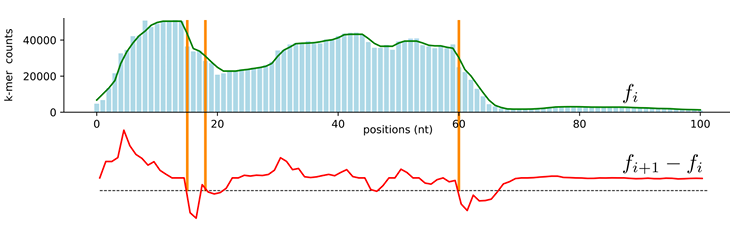

Week 01: ONT Chemistry Fundamentals and Preprocessing Tool Review
Overview
Understanding Oxford Nanopore Technology (ONT) Chemistry, especially the flow of rapid and ligation-based kits. I also did some exploration of various current read trimming and demultiplexing tools to understand their approaches.
Weekly meeting and action items (25-02-2026)
Weekly meeting with Michael and Leah:
Focus more on the adapter trimming stuff, assessing demultiplexer will come later.
Need to have truth datasets (for now look at the dataset from Michael’s paper).
The relevant projects are PRJNA1087001 and PRJNA1042815. Several samples were basecalled using the fast, hac, and sup models, each in both simplex and duplex modes.
The experiments were performed using the native barcode kit.
Do we only choose the fastqs file from sup model?
Demultiplexing tools: Dorado, Porechop, Barbell.. may we can cut away Porechop.. do we need to explore other tools? we have flexiplex
Application on Assembly, variant calling, and Taxomomic assignment
We will be using workflow management system snakemake
For the rest of the week, Dimas needs to study about ONT technical chemistry documentation and also reads paper related to adapter trimming and/or demultiplexing tools
Explore other adapter trimming tools:
We have chopper, but it doesn’t implement adapter trimming. It only perfomrs quality trimming and osort of reads trimming.
There is porechop_abi, it is a fork from original porechop that is no longer being mantained.
Only perfomrs adapter trimming, no demultiplexing supported.
porechop_abi doesn’t use reference to search adapter sequence, instead it uses k-mers counting and assembly
He used this Gram-negative dataset to generate truth sets of SNPs.
Enterobacter spp., four Klebsiella spp., four Citrobacter spp. and three E. coli (all environmentally sourced),Klebsiella pneumoniae subsp. pneumoniae MGH 78578 and E. coli CFT073
He considered trimming as two simultaneous preprocessing operations: removal of adapter sequence (using default setting) as well as 3’ quality trimming.
Compare the result of before and after (adapter and quality) trimming dataset on the SNP calling in large Illumina dataset. Used precision (positive predictive value), recall (sensitivity) and F-score as the metrics.
bwa-mem v0.7.17, and three variant callers, LoFreq, mpileup, and Strelka v2.9.2
Reanalysed and evaluating effect of adapter trimming in diverse range public archive: 1661 E. coli , 4416 M . tuberculosis and 1156 S . aureus sequencing reads. It produced 17 million SNPs and approx. 250 000 indels in total.
Result
He found that there is minimal impact of whether we do trim or do not on SNP varian calling accuracy. Only insignificant changes observed in F-score relative to untrimmed data (in fastp).
Trimming increased proportion of reads that are aligned, although SNP calling was not substantially altered. Most of SNPs (>99 %) called irrespective of trimming.
In few cases, quality trimming reduced sequencing depth and SNP call, although actually 99.1 % of the total set of 53 701 SNPs could still be called.
A proportion of mixed SNP (<100% suported allele) calls is marginally higher (10.26 % vs 9.05 %) for raw than trimmed data.
Trimming rarely changes the variant base called, but alter the level of support for a given variant in approximately 1 % of cases.
Trimming had slightly greater impact on indels calling (91.9 % called irrespective trimming), he interprete this with caution because he said fewer indels per sample than there are SNPs and the majority of indel calls are mixed. A greater proportion of the indel calls are incorrect, irrespective of whether reads are trimmed or not.
question: How do we approach read trimming here? because only fastplong that can performs both adapter and quality trimming simultinously. Other tools only perfoms either of those two types of trimming
Yes (Detects adapter sequences at both ends, given user provided sequencing kit, how is done not clearly documented, maybe it seems to use local aligment)
No
Yes (using barcode flank sequences as anchor, and using levenshtein distance)
it can automatically perform adapter trimming and demultiplexing on the fly with basecalling
Yes (It searches at both ends, using seed and extend. Using Trie, it extends to the left and right of the seed to see what is the dominant base (>=90%))
Yes (It can performs quality trimming by cut front and cut tail, break reads, mask quality region. But all those features are disabled by default)
No
Although it can identify automatically, the authors recommend the user to provide adapter sequence for ONT datasets. It also performs quality filtering by default.
Yes (After select some of reads from the sample, it generates kmers (16-mer) from both ends of those reads, and count the frequency. Get the top N most kmers to build assembly graph, then it reconstructs the path to get the barcode sequence (the heaviest path))
No
No
After the barcode sequence is detected, it uses local alignment to detect and trim the barcode contaminant
Yes (It breaks reads into non overlapping windows. Then it remove low quality windows. Output unfragmented reads with low quality windows are masked (with N) or fragmented)
No
It has two stratgies: remove segments below threshhold, or progressively remove the lowest qality and recalculating whole read quality. Very confusing interpretation in their benchmarking results
Yes (It can crop certain length of both ends, trim bases one by one until get higher than theshold, extract good quality segment of the reads, split reads by low quality segments).
No
It does not give any default argument for its paramters, so if no arguments given, the dataset will not change
Yes (Tag-based searching, look for flanking sequences Fl and Fr, locates masked tag (Fl–B–Fr). Then, it uses subsequence kernel of Lodhi that favors matches that tighly together )
Detects unexpected barcode patterns (dual-end, multiple barcodes, inner barcodes). Uses score normalization (≥20% of perfect score, ≥10% difference to second best)
Yes (It makes use of non variable barcode flank to search for barcode, and uses levenshtein distance.)
Support various barcode - UMI design, but it seems developed with focus on scRNA data. It doesn’t support dual end barcode experiment
Questions: Do we consider filtering as trimming as well here? because these several tools perform both quality and/or adapter trimming and read filtering
ONT Technical Chemistry Document and Dorado
Started reading the following papers/documentation:
Sequencing adapters -> oligonucleotides that are loaded with a motor protein, attached at the both ends of the DNA. They help to control the DNA or RNA strand movement through the nanopores, while also guide the molecule to the pore. In other words, They help DNA template to be sequenced. They have a motor protein that help unzip the dpouble standed DNA and feed a single strand through the nanopore.
Pore occupancy -> percentage of pores is used to sequence DNA strands. If it is low, there might not be enough adapter - read library?
The pore reads only one strand of the double helix, from 5’ to 3’.
ONT sequencing kit convention. Using SQK-RBK114.96 as an example:
Segment
Component
Meaning
SQK
Category
Sequencing Kit
RBK
Chemistry Type
The method used for library prep (e.g., Rapid Barcoding Kit).
114
Version & Flow Cell
Designed for R10.4.1 flow cells (V14 Chemistry).
.96
Multiplex Count
The number of unique barcodes included (number of samples).
There are at least two different chemistry:
Ligation-based sequencing kits
Optimised for output and accuracy (e.g. Native Barcoding Kit 96 V14 (SQK-NBD114.96)).
Ligation based enzyme is used to attach the sequencing adapters (by ligation) to the ends.
The libprep involves three enzymatic steps to prepare DNA ends for sequencing:
Repeair any damage in the DNA molecule and add a single adenide (A) overhang to the 3’ends of the double stranded DNA.
The ‘A’ i the DNA fragment pairs with the ‘T’ on the barcode, and ligase bonds glue together, resulting in a double stranded DNA fragment with a barcode on both ends.
After pooling the barcide samples together, adapater is then attached, it has also T tail to ligate onto barcode ends. my note: this kit has risk when adappter attached on DNA fragment (has A tail), but no barcode attached, resulting to high undetermined reads. Why don’t they attach barcode and adapter in the kit, then user just attach them in the sample DNA? does it change much?
Final structure: [Adapter]-[Barcode]-[sample DNA]-[Barcode]-[Adapter]
Both ends of the read are attached by the barcode.
Rapid-based sequencing kits
Optimised for speed and simplicity or for applications where turnaround times are more critical or laboratory equipment is limited (e.g. Rapid Barcoding Kit 96 V14 (SQK-RBK114.96)).
sample DNA is cut and the adpter is attached at the same time without any ligation enzyme
low input, very fast lib prep, low output accuracy due to lack of cleanup steps
It skips “repair and ligate” steps. It uses Transposase or Tagmentation technique.
Transposase (hold rapid barcode) cut and glue the barcode simultaneously, how?
Sequencing adapters are then attached to the transposase adapters in an enzyme-free reaction (?). It is like simply click onto some tags in tranposase?
Dorado can be used for both basecalling and barcdoe demultiplexing:
For demultiplexing, Dorado uses a modified Needlemen-Wunsch, each barcode is aligned to barcode section, then is assigned a score based on the alignment. The highest score that pass the certain threshold is chosen as the read barcode, and that can be trimmed.
The this that i am confused are:
Both native and rapid kits attach barcode at both ends, but why people for instance like Barbell paper said; “Rapid barcoding is designed to attach a single barcode to one end of the read” later at the stat, they said 6.1% (299,766) of reads carried barcodes on both ends… 🙄
If both kits attach barcode and adpater on both ends, then why Rapid reads usually only show a barcode at one end? Rapid kits do not use some clean up steps in the prep, still setaining ultra long DNA. The nanopore get block or stop reading read before it can finish read the fragment, so some of the 3’ (tail) barcode is never sequenced?
Point two implies that, we found barcode at the both ends of reads from native kit becuase they are generally shorter. It has longer prep steps and take longer, why produce shorter reads? Because it performs several washing steps, the longer DNA fragments get lost or throw away?
Why aren’t native reverse flanking sequence perfect reverse complement of the forwards? On the right flank of the forward barcode, it seems that the left flank of the reverse barcode just missing the ‘A’ that the physical dA-tail added during lib prep. I have no idea on why the right flank is much longer?
Different basecalling models model names convention: {analyte}_{pore}_{chemistry}_{speed}_{model@version}
analyte -> type substance that was being sequenced, DNA will be dna, direct RNA will be rna004
pore type -> the type of flow cell was used
chemistry type -> kit used for sequencing
Translocation speed -> rate the molecule pass trhough a nanopore, 130bps / 260bps / 400bps.’’
model -> 3 models are available and are named fast, hac (high-accuracy), and sup (super-accurate). On dorado, we can follow these three group of machine learning models:
fast -> fastest and effiecent computation, but least accurate (?). Compatible with real time basecalling on all nanopore devices with compute.
hac -> highly accurate, intermediate speed and cimputation. Compatible with real-time basecalling on GridION and PromethION devices with compute.
sup -> the most accurate, but computationally expensive. Recommended for de novo assembly projects and low-frequency variant analysis (e.g. somatic variation and single-cell applications).
Simplex and duplex basecalling
Simplex
Duplex -> combine information about basecalls, Q-scores and, signal from both template and its complement strand, and pass these trhough a stereo model. my note: how does it know a strand complement to which template strand? base on this video, both strand will be sequenced, by some likelihood. This imples this duplex is not designed by chemistry or sequencing technique. Dorado will identify which strand complement to which strand, if any.. and in simple terms it will combine them as single segemt that has higher quality. Also, dorado will report the duplex rate. fast model is not recommended for duplexdx tag on BAM output can be used to identified simlex and duplex reads:
1 -> a duplex read
0 -> a standard simplex read that does not have a matching pair
-1 -> a simplex read (template or complement) that was successfully paired to create duplex offspring.
Demultiplexing -> Group reads back to the original samples based the attched unique barcode.
Demultiplexer also perform adapter trimming but often left residual adpater in the reads. in ONT data, untrimmed adapters often received low basecalling scores.
barcoded are often flanked by spcific (identical across sample) sequences. Dorado and Flexiplex locate the flanking regions, then search the barcode sequence within them. These two tools use Levenshtein edit distance (number of edits required to transfrom one sequence to another) after perform semi global alignment.
Barbell uses the subsequence kernel (a match between two strings is better if it is consecitve or close to each other). gen to genomic and gengnoeminc have the same edit distanc eof three, but under the subsequence of kernel, the first alignment scores higher. Using CIGAR representation of an edit distance alignment.
My note: In pairwise alignment, we learn about affine gap penalty where we punish open gap more
They found that in reality only ~80% of the reads actually contain the expected barcode pattern (a single left side barcode)
They ran SQK-RBK110.96 kit, where it sequenced 66 diagnostic samples (BC01 to BC66) and a negative control (BC67). Rapid barci=dong is designed to attach a single barcode to one end of the read.
In the experiment, Barbell found 82.8% reads had a single left side barcode patter, and 17.2% of total reads deviated from the expected design. 6.1% of reads had barcodes on both read ends, 3.5% carried two barcodes on the left, adn 1% caried both two left and a single right end barcode. Some reads also end up with up to eight barcode (just barcode sequence).
after the demultiplexing process, only 0.004% of reads are contaminated (barcode left over), 10% in Dorado, and 8.8% in Flexiplex.
Dorado and Flexiplex retain short reads (<= 250 bp) uch more than Barbell after trimming. These reads are mostly adapter contaminated. They argued it is because Dorado and Flexiplex trimmed only one of the barcodes, additional copies remained.
Longer reads (>250 bp) were not trimmed consistently by the different tools. 423,908 reads trimmed by Dorado and 402,780 reads trimmed by Flexiplex were longer than those trimmed by Barbell.
Overall, incorrect trimming affected >8% of reads when using Dorado and Flexiplex.
Falling to detect the second barcode would be an issue when the two batcode are different. I guess the “inner” barcode is the correct one, as it attahced before multiplexing and adpater attachment. 99.5% contained the same barcode twice though.
Contamination from incomplete trimming affected the taxonomic classification. Barbell trimmed reads remain unclassified while Dorado reads were assigned to Enterobacteriaceae. It turned out, they found Mu transposon from tagmentation caysed artifical alignments, leading to misleading taxonomix assignments.
Incomplete trimming also affected assemblies. They found Saccharomyces cerevisiae assembly in their experiment is contaminated at three locations, with double left barcode leftover reads that Dorado failed to trim. Barbell correctly trimm that. They found further that that first ~90 bp of the contig are indeed absent from S cervicae genemoe, instead mathcd contamination Mu transposons.
Dorado demultiplexed 459,987 more than Barbel, most of them are annotated by Barbell but excluded in the final output.
Barbell adapter searching:
They denote a tag as Flanking (Fleft) - barcode - Flanking (Fright). τ = Fℓ ∘ B ∘ Fr. The barcode B, typically 24 bp, comes from a set of g known barcodes, β = {b1, b2, …, bg}, whereas Fℓ and Fr are fixed strings.
Tags defines as collection of tag (Fℓ ∘ B ∘ Fr) with length of less or equal than 250bp.
It first locate flanking sequences Fℓ and Fr, and mask the B sequence. Tag with mask barcode: τN:= Fℓ ∘ N|B| ∘ Fr
It uses edit distance to locate flank - mask barcode flank (τN) in reads. Then after it knows the barcode location (using flank sequences), Barbell utilises subsequence barcode scoring scheme:
It uses CIGAR string, C, of an edit-distance-based alignment. From this Barbell extract position where the barcode march perfectly. It rewards consecutive matches.
It uses decay parameter λ (0–1):
Small λ -> strong penalty for gaps (expects tight clusters).
High score -> many compact match clusters → likely true barcode with local error bursts.
Low score → sparse/interleaved matches → errors spread across barcode → less reliable match.
Those four barcodes have the same number of matches, but they have different score by the formula above. Higher score means the match is tighter (Barcode 4).
in their tool here, i think they use some sort of dynamic programming to make the calculation efficient.
Demultiplexing Annotating -> locate and score barcodes in the reads (all barcode are supported). given fasta file containing tag sequences, barbell extracts the masked region and compare it to barcde using subsequence score. By default, the score for b should be >20% of the perfect score, and the difference between the top two should be >10%. barbell uses sassy here.
Inspect -> groups reads into human-readable patterns. here, Barbell focuses on the locations of the tags in the reads, and does not report the barcode labels.
Filter -> extract the read annotations from annotate that match specific pattern
Barbell recomends two patterns safe: one tag on the left and pattern one tag on the left and right. If we find muultiple tags on either or both ends, always determibne the sample base on the inner barcode. Using maximize patterns will give most yield and should be used for tasks such as assembly, however for diagnostics and quantification, where false positives may affect the outcome, it might be better to use just the safe patterns.
trim -> reatain the non tag reads sequence
Barbell use edit distance to find the flank, constant sequence of DNA that sits right next to the barcode with the cut off error threshold 20 (~70% accuracy threshold)
then barbell use subsequence score to assign barcode, and setting a cut-off is not strighforward. It requires some sort of normalisation.
Flexiplex using a maximum edit distance (6 in barbell manuscript). and if two barcodes have the same cost, none is returned. allowing up to 9 edits for the top hit, and being at least 3 edits from the second-best hit. If the top barcode has more than 9 edits, it should be 6 edits apart from the second barcode.
Dorado uses more sophisticated heuristic where barcode are only search at some expected locations (<= 180 bases from the end)
It is designed with multithreading processing feature
Fastp automatically detects adapter sequences for illumina and ONT data, although for the later it is recommended to provide the sequence (if it is known). It search on both ends for ONT data. It uses edit distance (25% mismatch ratio), and by default it trim 10bp more connected to the adapter (why?)
From the paper above whiich seems to talk exculsively for illumina data. If the user, doesn’t prove adapter sequences, fastp discover adapter by looking high frequency pattern that consistently appear across the reads. It uses seed and extend, after seed is generated it extend the sequence before and after to see what is the most dominant base ((>90%)), it is using trie data structure. Nevertheless, i think for fastlong, it relies on the alignment to known adapter.
Quality filtering is also enabled by default, it has various quality filtering types: filter ambigious base (N) in reads, quality filtering by qscore (by default >=Q15), also the user can use average quality
It also has length filtering by default, the minimum length to retain the reads (by default is >=20bp)
They said: “Trimming and filtering tools are useful in DNA sequencing analysis because they increase the accuracy of sequence alignments and thus the reliability of results.”
Powler is desiged to remove low average Qscore segmennts (default= 100bp windows), instead of average Phred Quality Score of the entire read. It breaks reads into non overlapping windows. Then it remove low quality windows. It has two strategies, either it removes all windows that have avergre quality below certain threshold (default=7) (static) or progresivelly remove the lowest quality windoes. If the total number of remaining bases falls below a minimum number, then the reads are discarded.
It can output unfragmented reads with low quality windows ara masked (with N) or fragmented to only keep the good quality windows or regions in reads.
The authors benchmarked the tool against Nanofilt (no repaled by chopper) on mammalian (Bos indicus) read alignemtt. They claimed both strategies produced more reads mapped (because it retained more), static had lowe r alignment error rates.
They used bacterial (Mesoplasma syrphidae) dataset on genome assembly. The figure although it improved the error rates (by very tiny margin), but it made the NG50 (continuity) much worse <50% vs >95% of genome length (compared to nanofilt). The author said: Prowler maintained a high NG50 (>95% of genome length), while achieving the lowest error rate (2.14%). Either they put the wrong figure, or misinterpreted the figure, idk…
It is adapter trimming and demultiplexing tool, and i thik it uses smith waterman algortihm to perform pairwise sequence alignment.
Adapter trimming:
Find matching adapter It aligns a subset of reads (deault 10_0000) to all known adapter sets (seems to be harcoded in its codebase). Adapter sets is present in the sample if at least one has identity match 90%. by default it uses schoring scheme match = 3, mismatch = -6, gap open = -5, gap extend = -2
Trim adapter from read ends By default it consider 150bp first and last read sequences to be aligned to sets of adapters. The adapter (sub)sequence will be trimmed, if it detected in the reads with 75% identity match.
Chimeric reads the entirety of each read is aligned to the present adapter identified at the point 1. If strong match is found (default 85%), the read is split or discarded (an option). my note: is it iterative process? what happen if we have three adapters in one read? we only split once?. Also, is this process expesive?, because we align a whole read
Demultiplexing:
Porechop can also look barcodes at the start and end the read, and bin them. A barcode sequence is found if its match strong enough (75%) and is better, et least 5%, tot the second best.
By default it only looks a single barcode to bin a read, but it also has option two use both barcode at the start and end reads. For rapid kit, barcode usually only appear at the start of the reads.
Instead scan for known adapter in reads, this tool use approximate k-mers and assembly graph, and is able to discover adapter sequences based on their frequency alone.
Sampling It randomly selects 10 datasets of 40_000 reads with length at least 200bp to search for adapter sequence
The most frequent k-mers:
It first search fro frequesnt k-mers at the start of the reads (first 100 bp) or at the end of the read (last 100 bp) where adapter “located”, and assumes that there two regions have much high biological variation.
For each two region, it search for the 500 most frequent k-mers (value from 2 to 32, default 16). It filters ou low complexity k-mers.
2-errors frequency It expects the adapter sequences in reads have some degree of errors, so it performs a second count and compute for each k-mer its number of occurrences with up to two errors (substitutions, insertions or deletions).
Reconstruction of the adapter sequence
Using de brujin graph, it initates 500 the 500 most frequent k-mers weighted by their 2-errors frequency as nodes. There is some connection between nodes, if two node overlap of length k-1.
Path construction to search the heaviest path where the weight of a path is the sum of the weights of the nodes composing path.
The path construction produced sequence that is longer than the actual adapter sequence, so the adapter is the substring of the path. To find boundaries, use sliding windows to search for consecutive positions in the path with higher contrast.
For every nodes in the path bin into 7 nodes windows, and caluclate the median as f.
the adapter boundaries is marked by a steep drop in these smoothed frequencies. It looks for step by step differences Fj − Fj+1 accross the whole path.
It select largest indext of j that step by step difference is higher than threshold.
the threshold is caluclated by median of Fj − Fj+1 plus 0.075 x maximum count as buffer.

my note: when finding the overlaping nodes, does it consider the 2-errors as well?
When the 2-errors frequency of the k-mer with the highest 2-errors frequency is smaller than 10% of the total number of sequences of the sample (by default 40,000), the program outputs a low frequency warning message, meaning that the adapter may be unstable or that the dataset is not suitable for trimming.
consensus It cluster resulted sequences from 10 samples according their similarity score. It computes all pairwise alignment of semi-global mode, and build the cosensus sequence. A pair of sequences is considered compatible if the alignement is above 85% identity.
It uses Levenshtein distance or normal “edit distance”, a minimum number of edits required to make sequence A identical to sequence B. It assumes, all errors are equally likely. It is versitile, can work for illumina and nanopore datasets, also it is designed to demultiplex single cell long read RNA-Seq data. It can be used to identify barcode and unified Molecular Identifier.
It makes used of falnking sequence (similar to Barbell and Dorado). It locates the flanking regions and search for barcode sequences within them. The intermediate sequence, which contains the barcode and UMI, is initially left as a wildcard (default length of 28 bp).
Then it perfoms semi global alignmend for each barcode and calculate the Levenshtein distance.
The best matching barcode equal or less than a specified distance (default of two) is reported, but only if no other barcode has equal lowest distance.
To identify, it perfomed iteratively flank and barcode search witj previously found barcode, until no new barcode are found in the read.
The flank and barcode sequence are customisable.
If no, barcode list is provided, the sequence following the left flank is assumed as the barcode, and those will be reported aloingside the their frequency.
It seems that flexiplex does not support dual end barcode searching, but it can do it in a two-step approach to demux the 5’-end barcode then set up the second round to demux the 3’-end from each of the 5’-end subsets of files see here
{kind=link}
{kind=link}
{kind=link}
{kind=link}